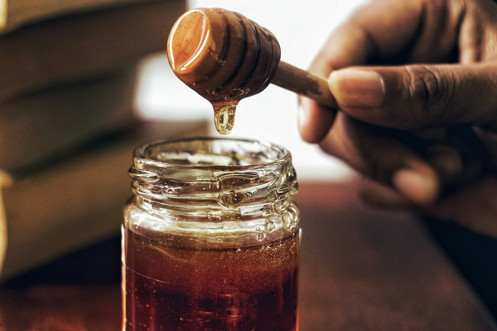
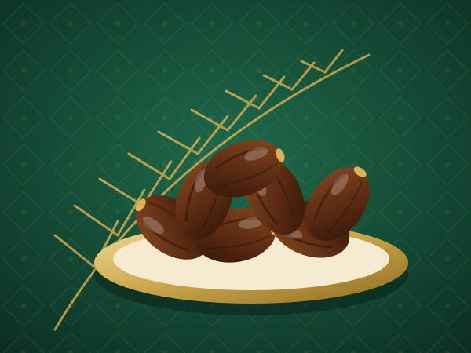
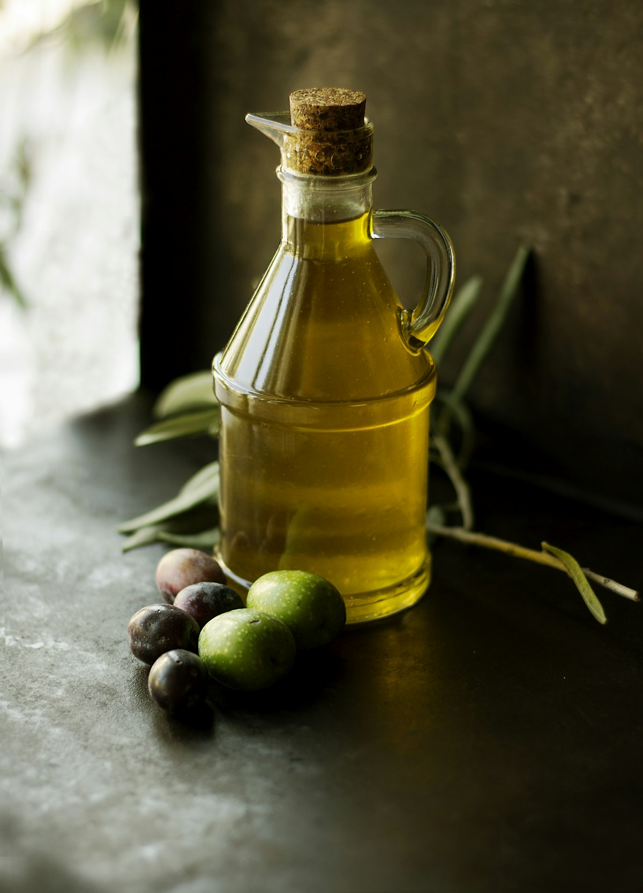
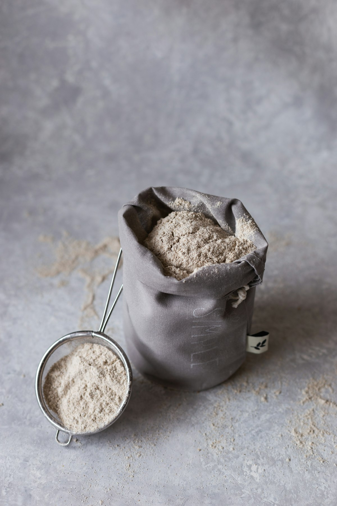
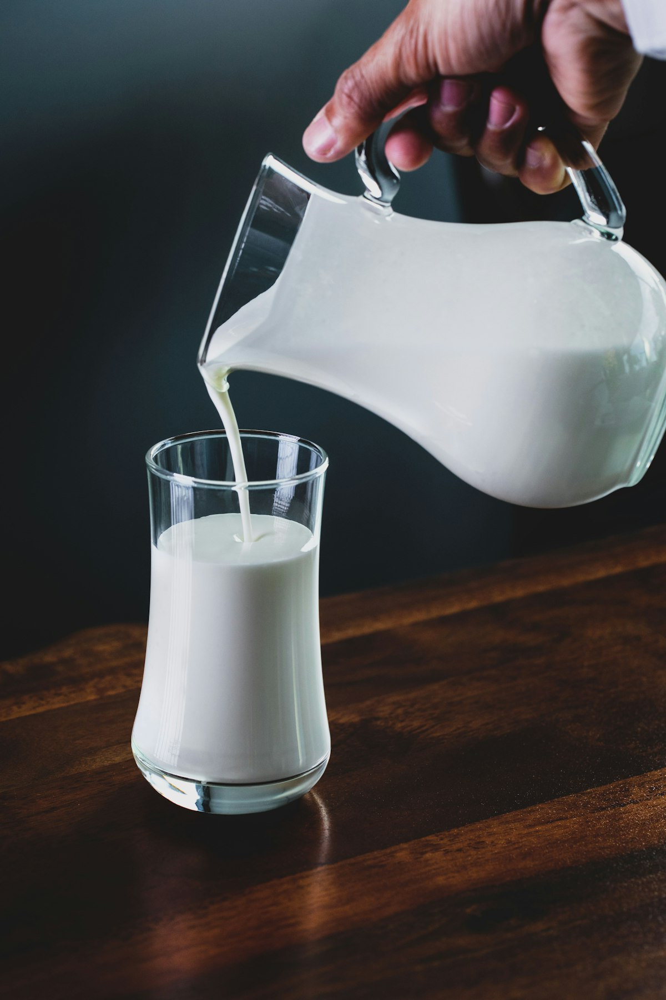

Kurma Ajwa
“Sesiapa yang bersarapan setiap pagi dengan tujuh biji kurma Ajwa, dia tidak akan ditimpa racun dan sihir pada hari itu.”
HR Bukhari & Muslimكُلُوا مِنْ طَيِّبَاتِ مَا رَزَقْنَاكُمْ
“Makanlah daripada rezeki yang baik-baik yang Kami berikan kepadamu.” (Al-Baqarah: 172)
Kurma Ajwa dari Madinah, madu Sidr Yaman, habbatussauda, minyak zaitun dan banyak lagi. Kami pilih setiap produk dengan teliti untuk keluarga anda.



Penghantaran Seluruh Malaysia
Pos dalam 1–2 hari bekerja
Halal & Asli
Sumber yang disahkan
Pembungkusan Premium
Sesuai dijadikan hadiah
Tempah via WhatsApp
Mudah & pantas
Makanan yang disebut dalam Al-Quran dan diamalkan oleh Rasulullah ﷺ, dipilih dengan teliti untuk anda.
Antara dalil daripada Al-Quran dan Hadis tentang makanan-makanan yang diberkati.
“Sesiapa yang bersarapan setiap pagi dengan tujuh biji kurma Ajwa, dia tidak akan ditimpa racun dan sihir pada hari itu.”
HR Bukhari & Muslim“...Daripada perut lebah itu keluar minuman yang berlainan warnanya, padanya terdapat penawar bagi manusia.”
Surah An-Nahl: 69“Sesungguhnya pada habbatussauda ini terdapat penawar bagi segala penyakit kecuali kematian.”
HR Bukhari & Muslim“Makanlah minyak zaitun dan berminyaklah dengannya, kerana ia daripada pokok yang diberkati.”
HR Tirmizi“Talbinah itu melegakan hati orang yang sakit dan menghilangkan sebahagian kesedihan.”
HR Bukhari“Demi buah Tin dan Zaitun, dan demi Gunung Sinai, dan demi negeri yang aman ini.”
Surah At-Tin: 1–3* Maklumat di atas adalah untuk perkongsian ilmu. Bagi masalah kesihatan, sila dapatkan nasihat doktor.


Warisan Sunnah bermula daripada hasrat sebuah keluarga kecil untuk berkongsi makanan sunnah yang asli dan berkualiti dengan masyarakat. Kami bekerjasama terus dengan pembekal dari Madinah, Yaman, Turki dan ladang tempatan.
“Kurma Ajwa sangat lembut dan manis. Pembungkusan cantik, sesuai buat hadiah untuk mak ayah.”
“Madu Sidr memang pekat dan wangi. Anak-anak suka. Penghantaran pun cepat, dua hari dah sampai.”
“Saya beli hamper untuk majlis syarikat. Semua orang puas hati. Insya-Allah akan order lagi.”
Pilih produk dan tambah ke troli, kemudian tekan “Tempah via WhatsApp”. Senarai tempahan anda akan dihantar terus kepada kami untuk pengesahan.
Semenanjung: 1–3 hari bekerja. Sabah & Sarawak: 3–5 hari bekerja. Penghantaran percuma untuk pembelian melebihi RM150.
Ya. Semua produk diperoleh terus daripada pembekal yang dipercayai, dan kami hanya menjual produk yang halal.
Boleh. Kami menerima tempahan borong, cenderahati majlis perkahwinan, dan hamper korporat. Hubungi kami untuk sebut harga.
Ada soalan atau mahu buat tempahan khas? Kami sedia membantu.